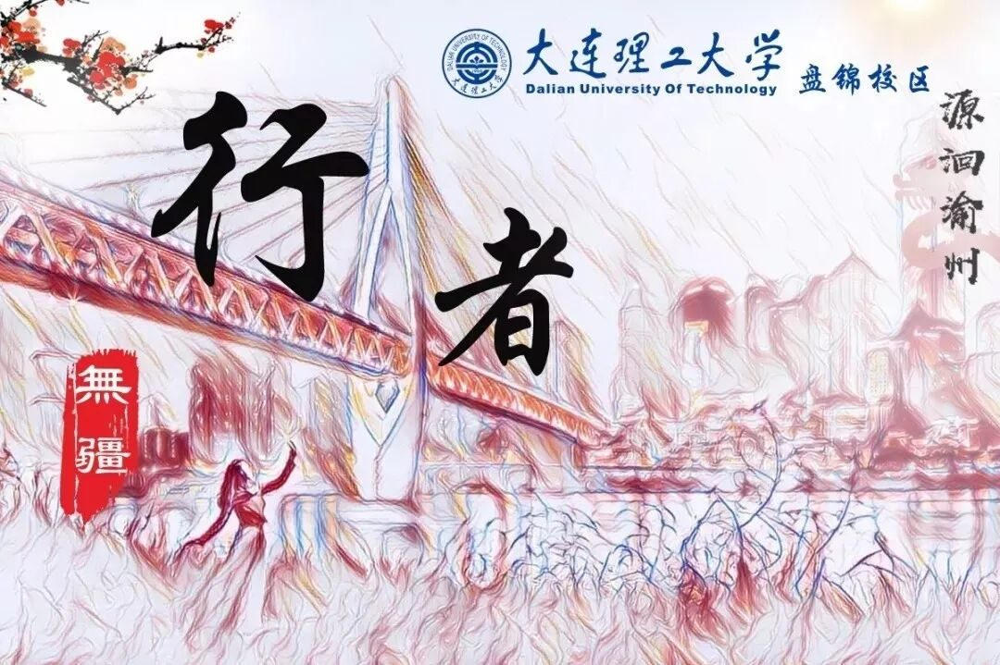
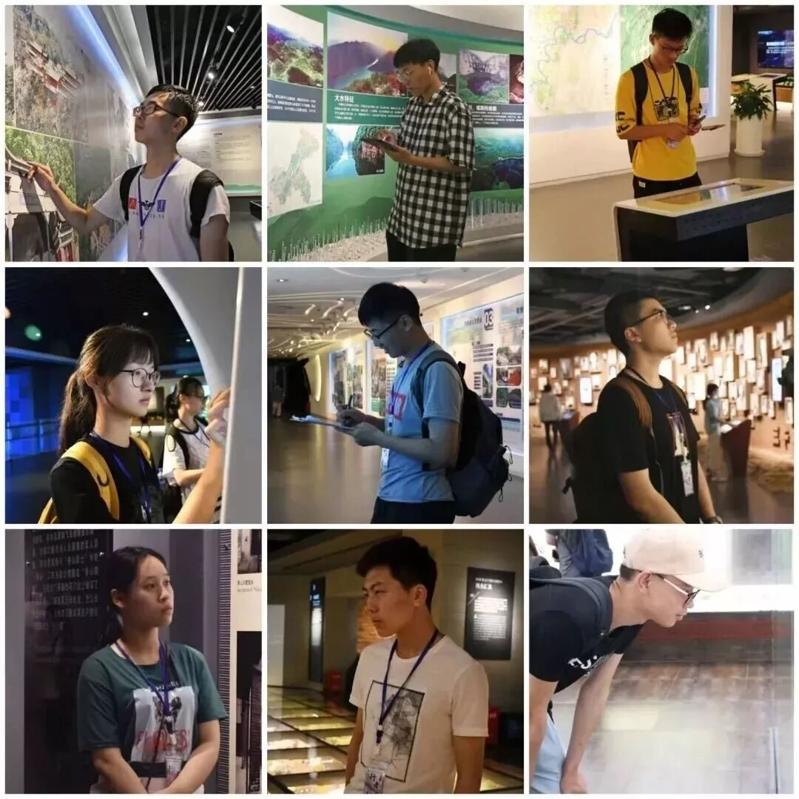
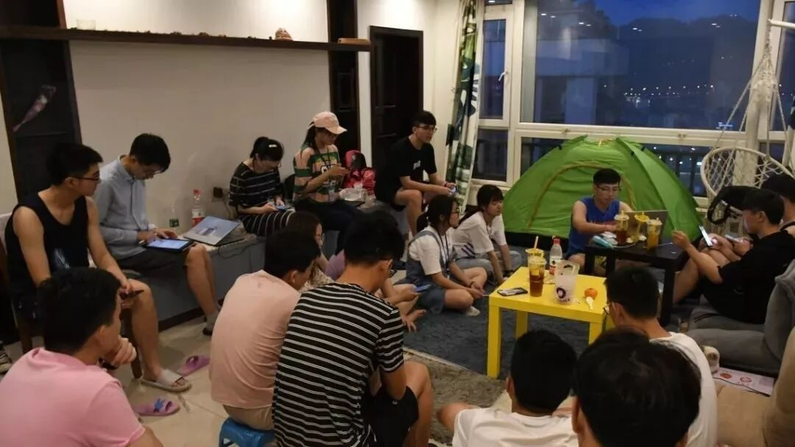
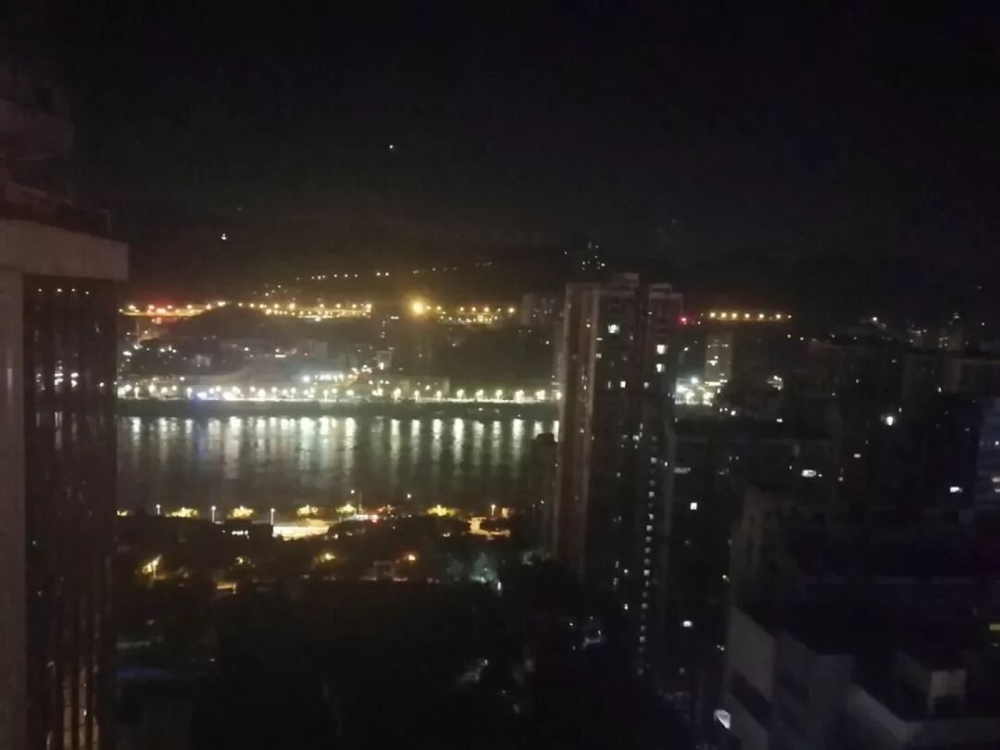
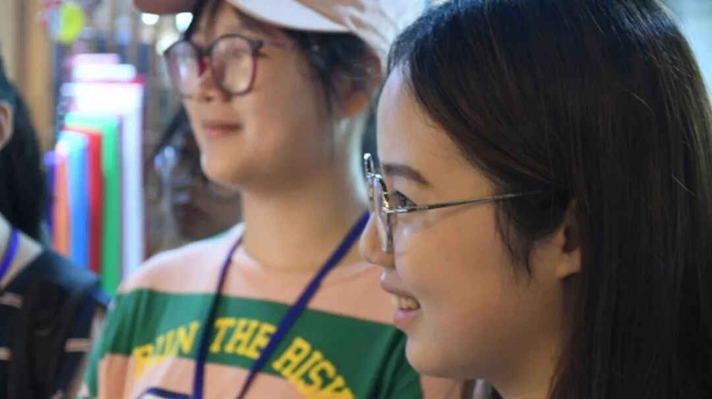
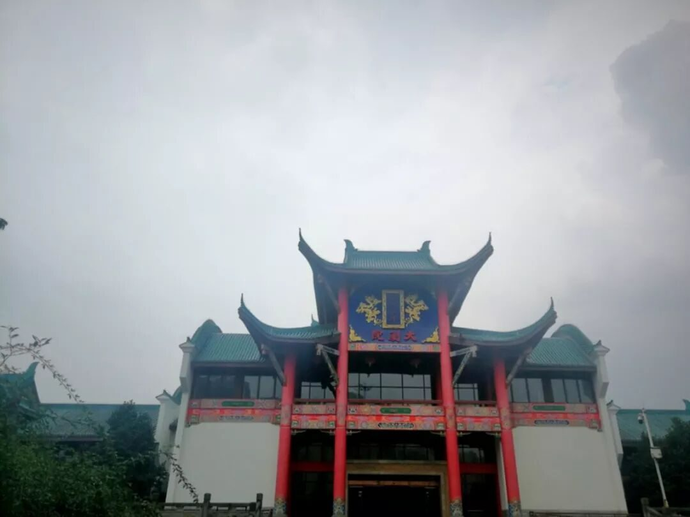
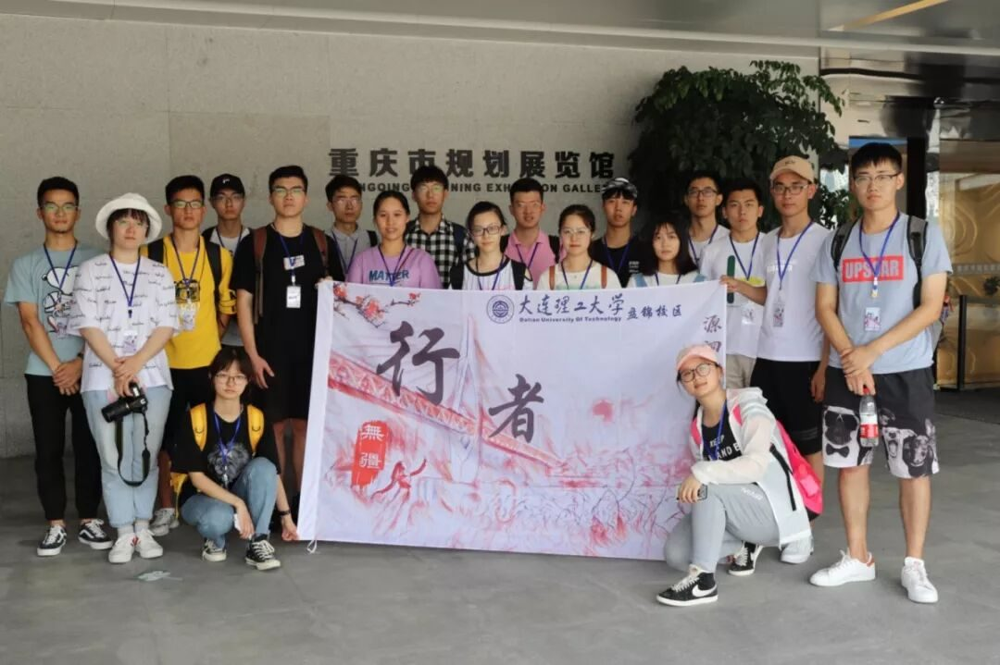
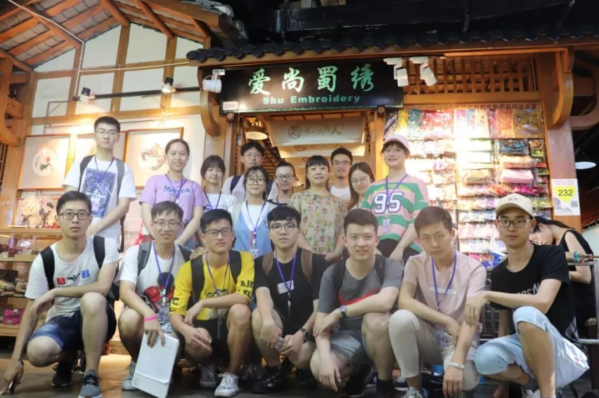
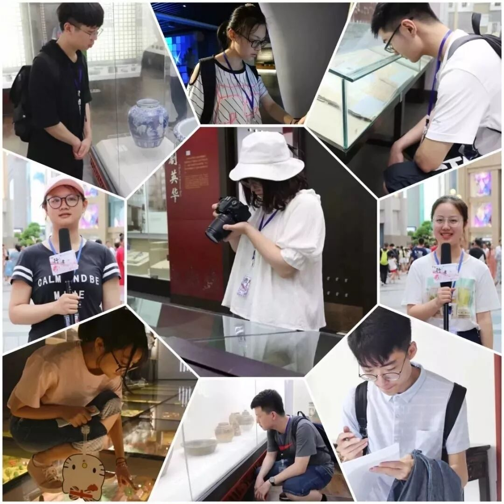

【渝传尺素•十一】你眼中有星海浩渺，山河千里

行者 陶奇

初识行者无疆，只是很浅显的根据字面意思理解为，这是一个志愿踏遍祖国大好河山的团队，豪气有余，灵魂尚缺。当终于成为一名行者，共同完成时长六天的“源洄渝州”后，以我仍旧浅显的感知，我想行者无疆是个不一样的团队，比用脚步丈量山河更重要的是用思想探寻文化，是一次次的文化苦旅与灵魂洗涤。而社会实践最重要的并非在经历中改变自己，当代大学生更是该思考作为传输者可以反馈给普世大众些什么，万幸行者无疆一直在这样做。

不一样的团队
不一样的行者无疆
行至朝雾里，坠入暮云间

19个小时的绿皮火车，从平原开往高原的盆地，感受着行进，颤动，速率，颠簸，还有面向未知的新奇与跃跃欲试。凌晨睡梦中几次醒来，偶见列车停靠于不知名小站，心里浮跃而出的是，这些车站的命名也是文化的蛛丝马迹，我离那份文化，越来越近了，与我生活的文化环境截然不同的，我曾在书中各种渠道中感知向往的文化。血液在身体里咕嘟咕嘟叫嚣着，如同赴一位老友的陈年之约。
待到正式醒来，瞥一眼窗外，如坠迷蒙中。火车在山腰上行驶，俯瞰着山底错落的屋舍。有耕田，有炊烟，有大狗，晋太原中的桃花源想必如此了。只是山间大朵大朵皎白纯净的云朵又为这厮烟火气添上了不真切。古老的巴渝文明仿若在云间静谧默然，等待我们的探寻。

夜幕深沉里，谈笑少年时
行者的日常是，每天早上八点冲入拥挤的地铁一号线，开始日均两万步的高强度山城苦旅：一边听讲解一边思考问题，备忘录里密密麻麻的记录下来，又急急忙忙奔赴下一个地点，间歇在轻轨上小鸡啄米。


大约六点行程结束后，来不及去感受下重庆人民晃晃悠悠的生活节奏，八点半的团体会议至十点左右，一天的重头戏才刚刚开始：
摄影组要整理当天的图片和采访视频，
文字组要记录当天的行程编辑文字，
宣传组要负责推送的排版和行者说说，
采访组要准备专访的策划和街访的问题，
后勤组要规划后续路线，
调研组要商讨调研问卷的内容撰写，
外联组要一直联系调研对象……

不知不觉抬眼，已是夜幕深沉里。辛劳和疲惫是有的，只是当时仿若打了精神嗦嘛，大脑皮层一直是兴奋着的。尤记得青旅灯下瘫着一边打字一边畅谈着对文化现象的看法，在思想冲撞中认同也坚持着。十九楼的窗外是大厦的屋顶，抬眼可见浩荡雄伟的长江。一辈子很短，如白驹过隙转瞬即逝，可那种心情很长，如高山大川。

熬夜是年轻人的常态，
只似这般的经历与心境却是难寻的。
我想也是团队苦旅共同的精神宝藏。
你眼中有星海浩渺，山河千里


时间和文字在一个个老故事里厮磨，
这是文化存在的极温暖方式。
行者们一路探寻那些老故事，
也在创造着属于我们的故事。

城市规划展览馆中，我们见证了山城规划的雄伟蓝图与高瞻远瞩；英雄名人馆里的每塑雕像都影响着重庆文化的演变；川剧博物馆中了解川剧的起源与现状，思考地方文化的归途；在卢作孚先生实业救国的事迹中畅想三千名流汇北碚的盛景；白公馆渣滓洞中燃烧的红岩魂彰显着重庆人民的英雄忠魂；巴渝民俗村里的拔步床又藏着豪爽的重庆人民骨子里的柔情细致……





这是行者们关于重庆的故事，
行者的故事却不止于重庆。
一期一会的文化苦旅，也渐渐形成了行者独有的文化。
是的，文化这个词从不只与古老的历史联系，它与庄重和信念相关。我们这代人，错错落落走在历史的山路上，前后拉的很长，而历史其选择的生态环境往往以文化为表征留存。
怀揣少年意气，眼中是稚嫩但璀璨的星河，山河无疆，我们却不只是探寻，更是以少年视野为桥梁，搭筑普世大众与文化间的联系，前仆后继。


每个人二十岁的时候都会有好多人说好多的道理给你，但该走的路该撞的南墙总归是要自己去经历的。在我的二十岁，不参杂任何功利因素的这场文化苦旅，是我的荣幸与骄傲。对于一个城市最美好的记忆，大概就是这座城市里有着与十九位同行者和一只猫共同流光溢彩的经历。那时的我们眼里有星海浩渺，山河万里。
来源丨行者无疆实践团
文字丨陶奇
排版丨康艳虎
审核丨邓子孚 段智然
视频丨陈辉
行者无疆实践团
QQ：2758025831

随行者一起认识世界
长按二维码